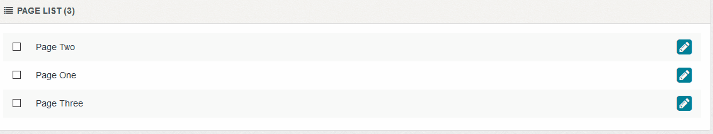
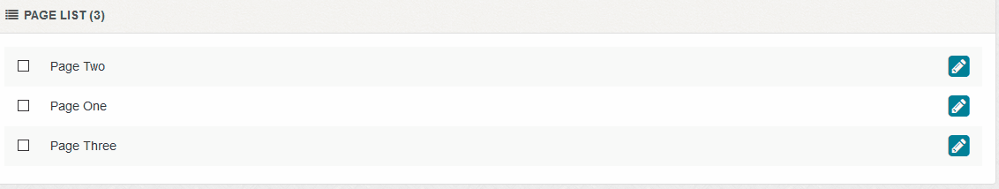

Manage Pages
Overview
Enter and / or edit additional pages. Easily add pages to your journal layout. Pages can load from custom templates for more complex operations.
General > Name
Enter new page name. Max 250 characters.
General > Information
Information to appear on page. PHP code cannot be used here, if you require PHP, you need to use a custom template as shown below. HTML is
allowed, but use VALID HTML5 so as not to break the responsive system.
You can do basic formatting via the BBcode buttons if they are enabled.

More information here.
Clicking the crosshair shows a bigger textarea. This might be useful for small devices.

You can do basic formatting via the BBcode buttons if they are enabled.
More information here.
Clicking the crosshair shows a bigger textarea. This might be useful for small devices.
Meta > Alternative Browser Title
Alternative page title that appears in your address bar. This might be hidden in some browsers but can be useful for search engines when
spidering your journal. Optional. Leave blank to disable.
Meta > URL Slug
Enter search engine friendly slug for your page. This is required (even if search engine friendly urls are off) and MUST be unique.
The ONLY characters allowed for slugs are: hyphens, underscores & alphanumeric. Anything else will be removed or ignored.
The ONLY characters allowed for slugs are: hyphens, underscores & alphanumeric. Anything else will be removed or ignored.
Options > Load from Custom Template
If you require complex code operations you can load pages from custom template files. You can use any code (PHP, HTML, JS etc) in a custom template
file. Please read the following directions to set a custom page:
1 Make a copy of 'content/**theme**/custom-templates/custom_tmp.tpl.php' and save to same folder.
2 Rename new template file. Name MUST begin 'custom_' for the system to pick it up. Keep the .tpl.php extension, this is important.
3 Add custom code to template file.
4 When creating page, select custom template from drop down menu.
For HTML, use valid HTML5. Do not break the responsive system.
1 Make a copy of 'content/**theme**/custom-templates/custom_tmp.tpl.php' and save to same folder.
2 Rename new template file. Name MUST begin 'custom_' for the system to pick it up. Keep the .tpl.php extension, this is important.
3 Add custom code to template file.
4 When creating page, select custom template from drop down menu.
For HTML, use valid HTML5. Do not break the responsive system.
Options > Enabled
Enable or disable page.
Options > Set As Landing Page
If page is set as landing page, this will be the first page people see when they visit your journal. Only one landing page can be set.
Page List
1 To delete, use checkboxes and the delete button. You can select all via the icon.
2 To edit, click the icon.
3 To reorder, drag and drop rows.

2 To edit, click the icon.
3 To reorder, drag and drop rows.
